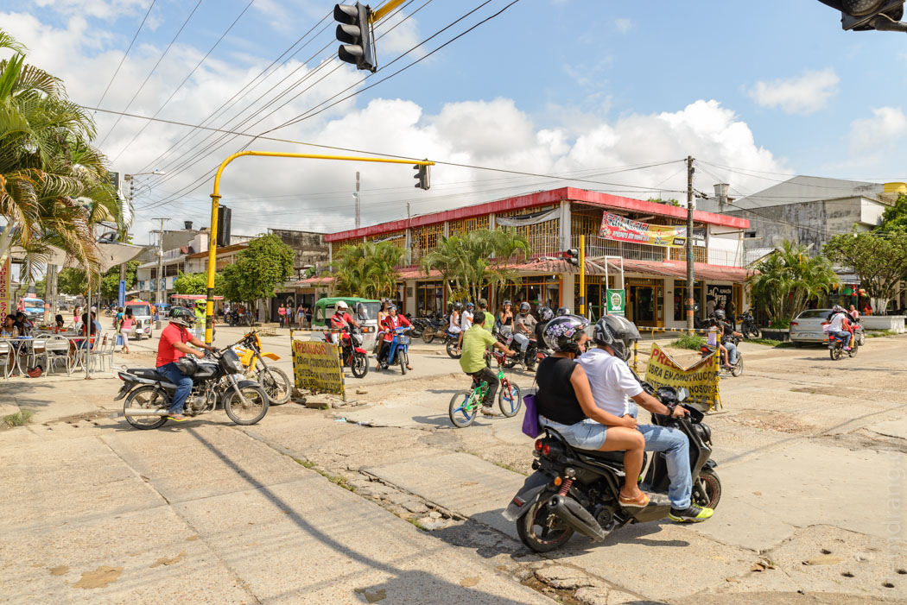
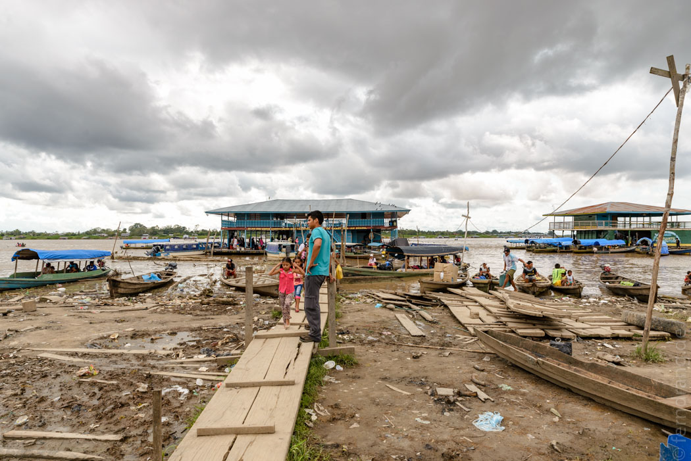
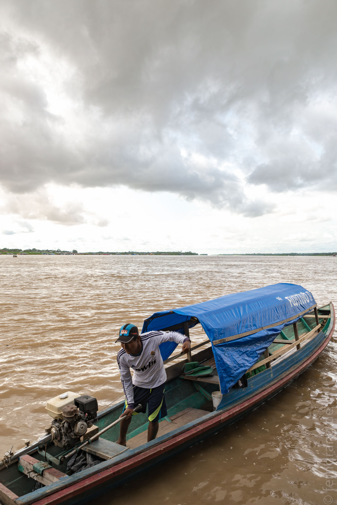
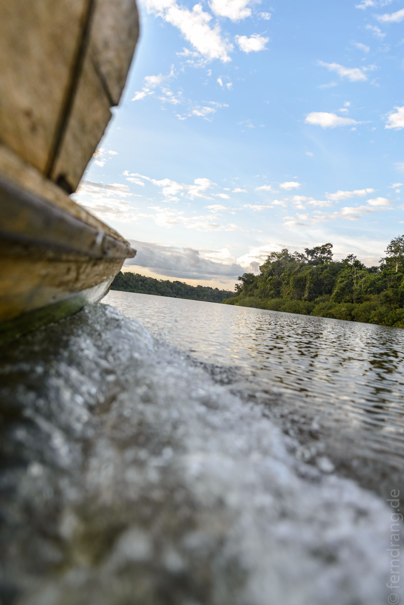
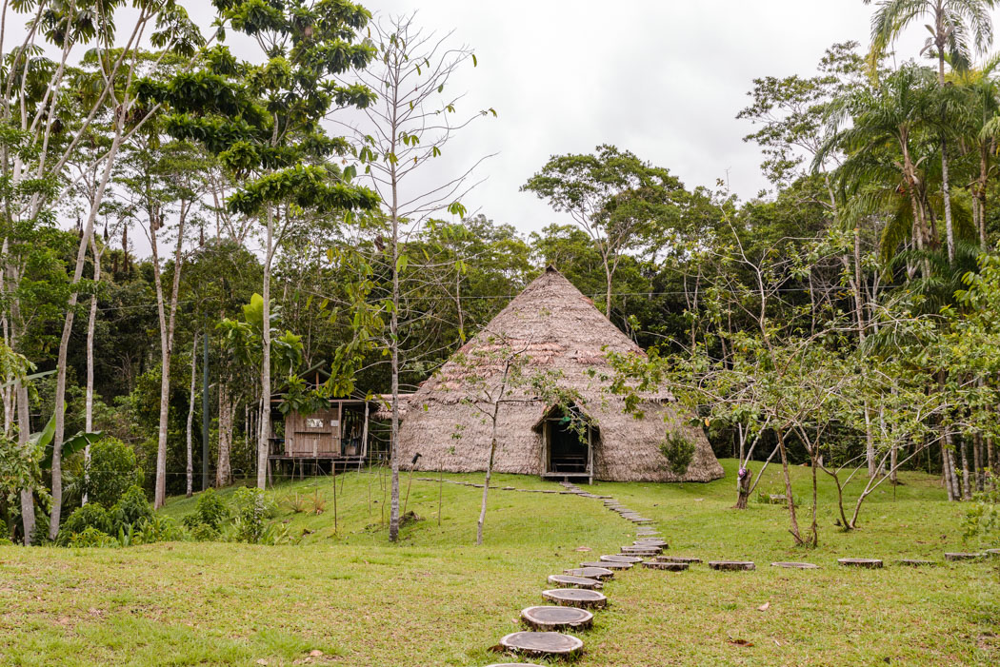

Morgens um 7 Uhr sind wir zum Flughafen gefahren, der sich als ziemlich modern, übersichtlich, und schön zeigt - nicht-Miami eben. Von dort sind wir nach Leticia geflogen, wo wir für den "günstigen und abenteuerlichen Weg" nach Palmarí abgeholt wurden. Leticia ist die kolumbianische Hälfte einer Doppelstadt. Die Grenze verläuft mitten im Städtchen. Dahinter geht es im brasilianischen Tabatinga weiter. Auf beiden Seiten sieht alles gleich aus: Schachbrett, einstöckige Häuser, breite, schlechte Straßen, mehr Roller als Einwohner. Nur an den beworbenen Bier-Marken lässt sich erkennen, in welchem Land man ist. Die Aus- und Einreise hat eine gewisse Freiwilligkeit, weil man selbst zur Polizei fahren muss, um sich anzumelden. Die macht aber von 12 bis zwei Siesta, so dass wir Dank unseres scheinbar klug gewählten Flugs, der um kurz vor 12 abgewickelt war, ebenfalls eine Mittagspause einlegen mussten. Leticia war in 10 Minuten erkundet. Danach blieb nur noch ein typisches Mittagsmenü mit Suppe, Huhn, Reis, Kochbananen und Saft für ca. 2,50€.
Als die brasilianische Polizei endlich wieder offen hatte, sind wir mit einer Rikscha zum Stempeln hin und dann zum Anleger. Plakate für Kaiser und Brahma machen klar, dass wir in Brasilien sind. Die Anwesenden scheinen passend dazu größtenteils betrunken zu sein. Wir sind optimistisch und halten ihre fromme Freude über den bevorstehenden Heiligabend für den Grund. Doch wähnt man sich auch an den Ghats in Varanasi. Lange, dreckige Treppen voller Menschen und Motorräder führen hinab zu einen schlammigen Uferstreifen. Über Bretter und Planken gelangt man zu einem schwimmenden Büdchen, von dem aus die Boote nach Benjamin Constant abfahren, der nächsten Stadt auf der anderen Seite des Amazonas.
Der Fluss ist ja der eigentliche Grund, weshalb wir hier sind. Weder bei unserer Brasilien- noch bei der Peru-Reise haben wir es in diese Gegend geschafft. Also jetzt. Am Ableger ist er noch enttäuschend normal. Nach der nächsten Kurve stellt er sich allerdings als Seitenärmchen heraus. Der eigentliche Amazonas ist hier schon fast einen stolzen Kilometer breit. Allerdings ist das viele Wasser von soviel eintönigem Grün eingerahmt, dass es nicht schmerzt nach einer halben Stunde anzukommen. Benjamin Constant ist aus zivilisatorischer Perspektive die Fortführung des Ablegers. Der Ort ist in ernsthaft desolatem Zustand. Betrunkene schlafen auf den Gehwegen (Weihnachten?) und alles ist verrostet oder vergammelt. Von hier fahren wir mit einem Taxi in die nächste Stadt. Bei Zebras kann man überlegen ob es schwarze Streifen auf weißem Grund sind, oder umgekehrt. Bei der Straße gibt es nichts zu streiten. Es sind Asphaltstückchen in Schlaglöchern, nicht umgekehrt. Die Slalomstrecke endet in Atalia do Norte am Rio Javari, ein Amazonas-Zufluss, an dessen Ufer die Palmarí-Lodge liegt.
Mit einem Langboot tuckern wir immer weiter in den Dschungel hinein. Schnell haben wir die letzten Zeichen der Zivilisation (Autos, Betrunkene und Müll) hinter uns gelassen. Die Sonne neigt sich schon langsam dem Abend zu und taucht das rechte Ufer in goldenes Licht. Der Fluss liegt in großen Schleifen im flachen Urwald. Hin und wieder können wir Abkürzungen zwischen zwei Kehren nehmen, die über schmale Wasserwege mitten durch den Wald gehen. Dann kommt endlich ein Dach in Sicht - wir sind angekommen.
Die Lodge besteht aus einem großen Holzhaus, in dem die Gemeinschaftsräume untergebracht sind. Auf der Terrasse kann man in Hängematten liegen und den Kolibris an den Zuckertränken zusehen. Wir schlafen in der "Maloka", einer großen, runden Hütte, in der Matratzen und Moskitonetze bereitgemacht wurden. Noch vor dem Abendessen werden wir wieder aufs Boot gescheucht, um Kaimane zu fangen. Natürlich macht man das nicht selbst, sondern guckt den Guides dabei zu. Die haben es aber auch nicht hingekriegt. Danach gab es ein großes Weihnachtsessen mit ganzen Hühnchen.
